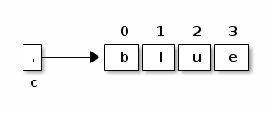
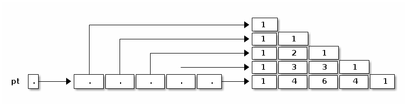

notes5
Table of Contents
Lecture 5
Today's reading: Sierra & Bates pp. 59-62, 83, 114-116, 293-300, 670.
LOOPS
"while" Loops
A "while" statement is like an "if" statement, but the body of the statement is executed repeatedly, as long as the condition remains true. The following example tests whether n is a prime number by attempting to divide it by every integer in the range 2…n - 1.
public static boolean isPrime(int n) { int divisor = 2; while (divisor < n) { _ <- "divisor < n" is the _loop_condition_. if (n % divisor == 0) { | return false; | These lines inside the braces } | are called the _loop_body_. divisor++; _| } return true; }
Here's how the loop executes.
- When Java reaches this "while" loop, it tests whether the loop condition "divisor < n" is true.
- If divisor < n, Java executes the loop body {in braces}.
- When Java finishes the loop body (i.e. after executing "divisor++"), it tests again whether "divisor < n" is true.
- If it's still true, Java jumps back up to the beginning of the loop body and executes it again.
- If Java tests the loop condition and finds that "divisor < n" is false, Java continues execution from the next line of code after the loop body.
An iteration is a pass through the loop body. In this example, if n is 2 or less, the loop body won't iterate even once.
"for" Loops
"for" loops are a convenient shorthand that can be used to write some "while" loops in a more compact way. The following "for" loop is equivalent to the following "while" loop.
for (initialize; condition; next) { | initialize; statements; | while (condition) { } | statements; | next; | }
By convention, the "initialize" and "next" are both expressions that affect a variable that changes every loop iteration and is central to the test. Most commonly, "for" statements are used to iterate while advancing an index variable over a fixed range of values. isPrime can be rewritten thus:
public static boolean isPrime(int n) { for (int divisor = 2; divisor < n; divisor++) { _ if (n % divisor == 0) { | return false; | Loop body. } _| } return true; }
A common mistake among beginning Java and C programmers is to get the condition wrong and do one loop iteration too few. For example, suppose you want to print all the prime numbers in the range 2…n.
public static void printPrimes(int n) { int i; for (i = 2; i < n; i++) { // ERROR!!! Condition should be i <= n. if (isPrime(i)) { System.out.print(" " + i); } } }
Suppose we correct this method so the loop condition is "i <= n". Think carefully: what is the value of i when the printPrimes method ends?
We'll come back to iteration, but first let's investigate something more interesting to iterate on.
ARRAYS
An array is an object consisting of a numbered list of variables, each of which is a primitive type or a reference to another object. The variables in an array are always indexed from zero in increments of one. For example, here is an array of characters.

Like any object, an array is only useful if we can reference it, usually through some reference variable like "c" above. We declare c thusly:
char[] c; // Reference to an array (of any length) of characters.
We can construct an array of four characters as follows.
c = new char[4];
Now that we have an array object, we may fill in its values by indexing c.
c[0] = 'b'; // Store the character 'b' at index 0. c[1] = 'l'; c[2] = 'u'; c[3] = 'e';
The characters in a four-element array are indexed from 0 to 3. If we try to address any index outside this range, we will trigger a run-time error.
c[4] = 's'; // Program stops with ArrayIndexOutOfBoundsException
A run-time error is an error that doesn't show up when you compile the code, but does show up later when you run the program and the Java Virtual Machine tries to access the out-of-range index.
When c references an array, you can find out its length by looking at the field "c.length". You can never assign a value to the "length" field, though. Java will give you a compile-time error if you try.
Primes Revisited
The printPrimes method is embarrassingly slow when n is large. Arrays can help us write a faster method to identify the primes from 2 to n.
The method uses an ancient algorithm called the Sieve of Eratosthenes. All integers are assumed prime until proven composite. The algorithm iterates through all possible divisors, and marks as non-prime every integer divisible by a given divisor. Here's the beginning of the method.
public static void printPrimes(int n) { boolean[] prime = new boolean[n + 1]; // Numbered 0...n. int i; for (i = 2; i <= n; i++) { prime[i] = true; // Prime until proven composite. }
Why did we construct an array of length n + 1? Because if we'd constructed an array of length n, its elements would be numbered from 0 to n - 1. But we'd like to have an element numbered n.
To continue the method, we iterate over all possible divisors from 2 to the square root of n. For each prime value of divisor, we mark as non-prime all integers divisible by divisor, except divisor itself.
for (int divisor = 2; divisor * divisor <= n; divisor++) { if (prime[divisor]) { for (i = 2 * divisor; i <= n; i = i + divisor) { prime[i] = false; // i is divisible by divisor. } } }
Math question: why do we only need to consider divisors up to the square root of n?
Finally, we print every integer from 2 to n that hasn't been marked non-prime.
for (i = 2; i <= n; i++) { if (prime[i]) { System.out.print(" " + i); } }
Observe that elements 0 and 1 of the array are never used. A tiny bit of memory is wasted, but the readability of the code is better for it.
Multi-Dimensional Arrays
A two-dimensional array is an array of references to arrays. A three- dimensional array is an array of arrays of arrays. As an example, consider Pascal's Triangle.
1 <-- row 0
1 1
1 2 1
1 3 3 1
1 4 6 4 1
1 5 10 10 5 1 <-- row 5
Each entry is the sum of the two nearest entries in the row immediately above. If the rows are numbered from zero, row i represents the coefficients of the polynomial (x + 1)i. For example, (x + 1)4 = x4 + 4x3 + 6x2 + 4x + 1.
The following method returns an array of arrays of ints that stores the first n rows of Pascal's Triangle.
public static int[][] pascalTriangle(int n) { int[][] pt = new int[n][];
Here, we've just declared pt to reference an array of arrays, and constructed an array for it to reference. However, the arrays that this array will reference do not yet exist. They are constructed and filled in by the following loop.
for (int i = 0; i < n; i++) { pt[i] = new int[i + 1]; // Construct row i. pt[i][0] = 1; // Leftmost value of row i. for (int j = 1; j < i; j++) { pt[i][j] = pt[i - 1][j - 1] + pt[i - 1][j]; // Sum 2 entries above. } pt[i][i] = 1; // Rightmost value of row i. } return pt;
Our array objects look like this:
